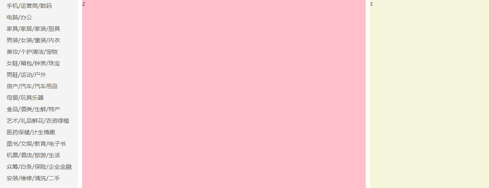

最终效果

思路
左边无序列表，右边定义列表。子绝父相。
左边鼠标悬浮在列表项上，背景占满且左侧有间距，所以要用 padding。
右边鼠标悬浮出现，相对于<ul>绝对定位。<dt>, <dl>分别左浮。
源码
1
2
3
4
5
6
7
8
9
10
11
12
13
14
15
16
17
18
19
20
21
22
23
24
25
26
27
28
29
30
31
32
33
34
35
36
37
38
39
40
41
42
43
44
45
46
47
48
49
50
51
52
53
54
55
56
57
58
59
60
61
62
63
64
65
66
67
68
69
70
71
72
73
74
75
76
77
78
79
80
81
82
83
84
85
86
87
88
89
90
91
92
93
94
95
96
97
98
99
100
101
102
103 | <div class="main-content">
<div class="container clearfix">
<ul class="side-nav leftfix">
<li>
<a href="#">手机/运营商/数码</a>
<div class="second-menu">
<dl class="clearfix">
<dt><a href="#">电子书刊</a></dt>
<dd><a href="#">电子书</a></dd>
<dd><a href="#">网络原创</a></dd>
<dd><a href="#">数字杂志</a></dd>
<dd><a href="#">多媒体图书</a></dd>
</dl>
<dl class="clearfix">
<dt><a href="#">音像</a></dt>
<dd><a href="#">音乐</a></dd>
<dd><a href="#">影视</a></dd>
<dd><a href="#">教育音像</a></dd>
</dl>
<dl class="clearfix">
<dt><a href="#">英文原版</a></dt>
<dd><a href="#">少儿</a></dd>
<dd><a href="#">商务投资</a></dd>
<dd><a href="#">英语学习考试</a></dd>
<dd><a href="#">文学</a></dd>
<dd><a href="#">传记</a></dd>
<dd><a href="#">励志</a></dd>
</dl>
<dl class="clearfix">
<dt><a href="#">文艺</a></dt>
<dd><a href="#">小说</a></dd>
<dd><a href="#">文学</a></dd>
<dd><a href="#">青春文学</a></dd>
<dd><a href="#">传记</a></dd>
<dd><a href="#">艺术</a></dd>
</dl>
<dl class="clearfix">
<dt><a href="#">少儿</a></dt>
<dd><a href="#">胎教</a></dd>
<dd><a href="#">0-2岁</a></dd>
<dd><a href="#">3-6岁</a></dd>
<dd><a href="#">7-10岁</a></dd>
<dd><a href="#">11-14岁</a></dd>
</dl>
<dl class="clearfix">
<dt><a href="#">人文社科</a></dt>
<dd><a href="#">历史</a></dd>
<dd><a href="#">哲学</a></dd>
<dd><a href="#">国学</a></dd>
<dd><a href="#">政治/军事</a></dd>
<dd><a href="#">法律</a></dd>
<dd><a href="#">人文社科</a></dd>
<dd><a href="#">心理学</a></dd>
<dd><a href="#">文化</a></dd>
<dd><a href="#">社会科学</a></dd>
</dl>
<dl class="clearfix">
<dt><a href="#">经管励志</a></dt>
<dd><a href="#">经济</a></dd>
<dd><a href="#">金融与投资</a></dd>
<dd><a href="#">管理</a></dd>
<dd><a href="#">励志与成功</a></dd>
</dl>
<dl class="clearfix">
<dt><a href="#">生活</a></dt>
<dd><a href="#">健康与保健</a></dd>
<dd><a href="#">家庭与育儿</a></dd>
<dd><a href="#">旅游</a></dd>
<dd><a href="#">烹饪美食</a></dd>
</dl>
<dl class="clearfix">
<dt><a href="#">科技</a></dt>
<dd><a href="#">工业技术</a></dd>
<dd><a href="#">科普读物</a></dd>
<dd><a href="#">建筑</a></dd>
<dd><a href="#">医学</a></dd>
<dd><a href="#">科学与自然</a></dd>
<dd><a href="#">计算机与互联网</a></dd>
<dd><a href="#">电子通信</a></dd>
</dl>
<dl class="clearfix">
<dt><a href="#">教育</a></dt>
<dd><a href="#">中小学教辅</a></dd>
<dd><a href="#">教育与考试</a></dd>
<dd><a href="#">外语学习</a></dd>
<dd><a href="#">大中专教材</a></dd>
<dd><a href="#">科学与自然</a></dd>
<dd><a href="#">字典词典</a></dd>
</dl>
<dl class="clearfix">
<dt><a href="#">艺术与收藏</a></dt>
<dd><a href="#">经济管理</a></dd>
<dd><a href="#">文化与艺术</a></dd>
</dl>
<dl class="clearfix">
<dt><a href="#">其他</a></dt>
<dd><a href="#">工具书</a></dd>
<dd><a href="#">杂志期刊</a></dd>
<dd><a href="#">套装书</a></dd>
<dd><a href="#">打折图书</a></dd>
</dl>
</div>
</li>
|
````css
.main-content .side-nav {
width: 190px;
height: 458px;
background-color: #f4f4f4;
position: relative;
}
.main-content .side-nav li {
font-size: 14px;
color:#333;
/* 除了使用margin控制边距，还可以计算行高 /
/ margin: 7px 0 7px 16px; /
/ height: 28px; /
line-height: 28px;
/ 悬浮出现背景色，所以不用margin用padding */
padding-left: 16px;
}
.main-content .side-nav li:hover,
.main-content .side-nav li:hover>a {
background-color: #DD302D;
color: white;
}
/* 先定义好尺寸和位置隐藏起来 */
.main-content .side-nav .second-menu {
width: 680px;
height: 458px;
position: absolute;
top: 0;
left: 190px;
padding-left: 20px;
background-color: white;
display: none;
}
/* 当鼠标悬浮在
上时再出现 */
.main-content .side-nav li:hover .second-menu {
display: block;
}
.second-menu dl {
height: 36px;
line-height: 36px;
}
.second-menu dl:first-of-type {
margin-top: 10px;
}
/* 让定义列表横向排列 */
.second-menu dt {
float: left;
width: 70px;
height: 20px;
margin-right: 10px;
font-weight: bold;
}
.second-menu dd {
float: left;
}
.second-menu dd a {
border-left: 1px solid #666;
/* 小细节 */
padding: 0 10px;
}
```
最后更新:
July 2, 2023
创建日期:
June 28, 2023
{kind=link}